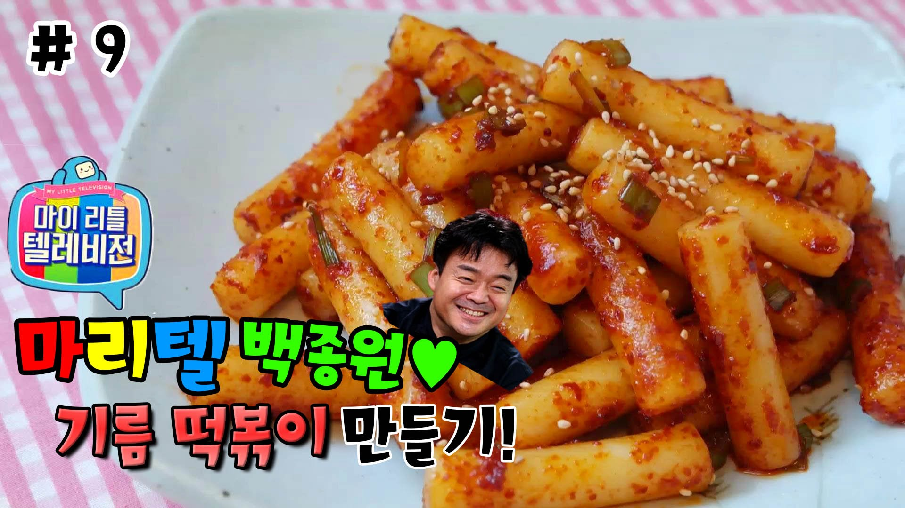

food recipes top5
해물탕 황금레시피
바삭한 찹쌀탕수육
돼지고기김치찜 끝판왕
백종원의 기름떡볶이
황금비율 닭볶음탕
백종원의 기름떡볶이

레시피 동영상
유사한 동영상 더보기
조리방법
떡을 적당하게 썰어서 말랑말랑해질때까지 데쳐서 준비해주세요.
대파는 쏭쏭 썰어주세요.
고추가루, 참기름, 설탕, 간장을 분량대로 넣어 섞어주세요.
팬에 식용유 3큰술을 넣고 무쳐놓은 떡을 넣어 약불에서 볶아 완성해주세요. (약불로 볶아주셔야 고추가루가 타지 않으니 주의해주시구요.)
재료
주재료:
떡볶이 떡 2컵, 대파 1개
양념:
고추가루, 간장, 설탕, 참기름, 식용유